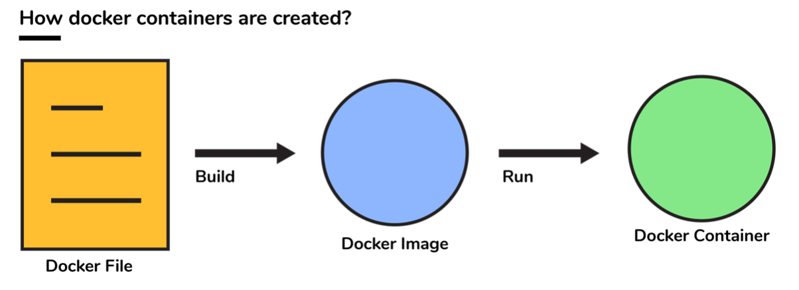
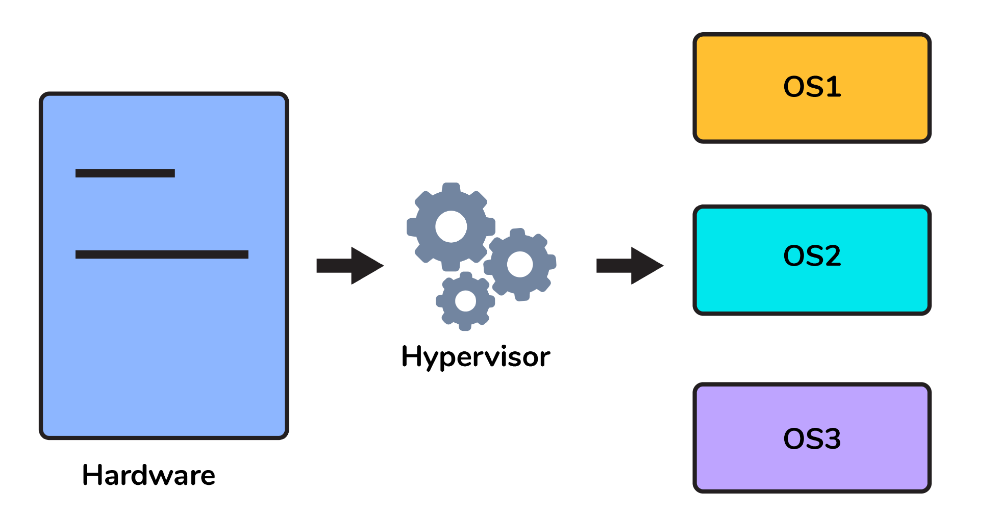
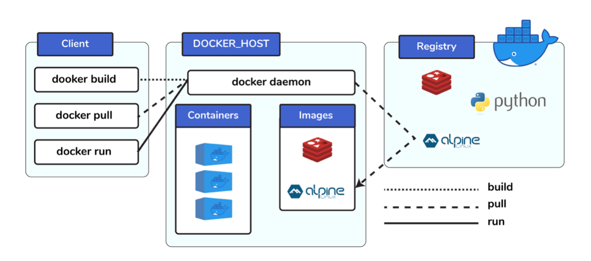
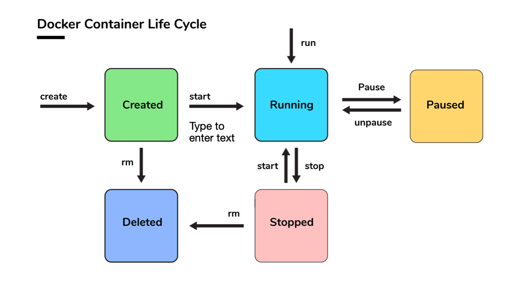

Docker interview questions and Answers
We have consolidated a list of frequently asked Docker interview questions for Freshers and Experienced. This will help DevOps Engineers in their preparations for Interview.
You will find these questions very helpful in your DevOps interviews. Prepare well and All the very best.
All the feedbacks and suggestions are most welocome.
Docker Basic Interview Questions
-
Can you tell something about docker container?
- In simplest terms, docker containers consist of applications and all their dependencies. - They share the kernel and system resources with other containers and run asisolated systems in the host operating system. - The main aim of docker containers is to get rid of the infrastructure dependency while deploying and running applications. This means that any containerized application can run on any platform irrespective of the infrastructure being used beneath. - Technically, they are just the runtime instances of docker images. -
What are docker images?
They are executable packages(bundled with application code & dependencies, soware packages, etc.) for the purpose of creating containers. Docker images can be deployed to any docker environment and the containers can be spun up there to run the application. -
What is a DockerFile?
It is a text file that has all commands which need to be run for building a given image.
-
Can you tell what is the functionality of a hypervisor?
A hypervisor is a so ware that makes virtualization happen because of which is sometimes referred to as the Virtual Machine Monitor. This divides the resources of the host system and allocates them to each guest environment installed.
- This means that multiple OS can be installed on a single host system. Hypervisors are of 2 types: 1. Native Hypervisor: This type is also called a Bare-metal Hypervisor and runs directly on the underlying host system which also ensures direct access to the host hardware which is why it does not require base OS. 2. Hosted Hypervisor: This type makes use of the underlying host operating system which has the existing OS installed. -
What can you tell about Docker Compose?
It is a YAML file consisting of all the details regarding various services, networks, and volumes that are needed for setting up the Docker-based application. So, dockercompose is used for creating multiple containers, host them and establish communication between them. For the purpose of communication amongst the containers, ports are exposed by each and every container. -
Can you tell something about docker namespace?
A namespace is basically a Linux feature that ensures OS resources partition in a mutually exclusive manner. This forms the core concept behind containerization as namespaces introduce a layer of isolation amongst the containers. In docker, the namespaces ensure that the containers are portable and they don't affect the underlying host. Examples for namespace types that are currently being supported by Docker – PID, Mount, User, Network, IPC. -
What is the docker command that lists the status of all docker containers?
In order to get the status of all the containers, we run the below command: docker # ps -a -
On what circumstances will you lose data stored in a container?
The data of a container remains in it until and unless you delete the container. -
What is docker image registry?
- A Docker image registry, in simple terms, is an area where the docker images are stored. Instead of converting the applications to containers each and every time, a developer can directly use the images stored in the registry. - This image registry can either be public or private and Docker hub is the most popular and famous public registry available. -
How many Docker components are there?
There are three docker components, they are - Docker Client, Docker Host, and Docker Registry. - Docker Client: This component performs “build” and “run” operations for the purpose of opening communication with the docker host. - Docker Host: This component has the main docker daemon and hosts containers and their associated images. The daemon establishes a connection with the docker registry. - Docker Registry: This component stores the docker images. There can be a public registry or a private one. The most famous public registries are Docker Hub and Docker Cloud.
-
What is a Docker Hub?
- It is a public cloud-based registry provided by Docker for storing public images of the containers along with the provision of finding and sharing them. - The images can be pushed to Docker Hub through the docker push command. -
What command can you run to export a docker image as an archive?
This can be done using the docker save command and the syntax is: # docker save -o <exported_name>.tar <container-name> -
What command can be run to import a pre-exported Docker image into another Docker host?
This can be done using the docker load command and the syntax is: # docker load -i <export_image_name>.tar -
Can a paused container be removed from Docker?
No, it is not possible! A container MUST be in the stopped state before we can remove it. -
What command is used to check for the version of docker client and server?
- The command used to get all version information of the client and server is the "docker version". - To get only the server version details, we can run: # docker version --format '{{.Server.Version}}'
Docker Intermediate Interview Questions
-
Differentiate between virtualization and containerization.
The question indirectly translates to explaining the difference between virtual machines and Docker containers.Virtualization Containerization This helps developers to run and host multiple OS on the hardware of a single physical server. This helps developers to deploy multiple applications using the same operating system on a single virtual machine or server. Hypervisors provide overall virtual machines to the guest operating systems. Containers ensure isolated environment/ user spaces are provided for running the applications. Any changes done within the container do not reflect on the host or other containers of the same host. These virtual machines form an abstraction of the system hardware layer this means that each virtual machine on the host acts like a physical machine. Containers form abstraction of the application layer which means that each container constitutes a different application. -
Differentiate between COPY and ADD commands that are used in a Dockerfile?
Both the commands have similar functionality, but 'COPY' is more preferred because of its higher transparency level than that of 'ADD'. 'COPY' provides just the basic support of copying local files into the container whereas 'ADD' provides additional features like remote URL and tar extraction support. -
Can a container restart by itself?
- Yes, it is possible only while using certain docker-defined policies while using the docker run command. Following are the available policies: 1. Off: In this, the container won’t be restarted in case it is stopped or it fails. 2. On-failure: Here, the container restarts by itself only when it experiences failures not associated with the user. 3. Unless-stopped: Using this policy, ensures that a container can restart only when the command is executed to stop it by the user. 4. Always: Irrespective of the failure or stopping, the container always gets restarted in this type of policy. These policies can be used as: # docker run -dit — restart [restart-policy-value] [container_name] -
Can you tell the differences between a docker Image and Layer?
Image: This is built up from a series of read-only layers of instructions. An image corresponds to the docker container and is used for speedy operation due to the caching mechanism of each step. Layer: Each layer corresponds to an instruction of the image’s Dockerfile. In simple words, the layer is also an image but it is the image of the instructions run. Consider the example Dockerfile below. FROM ubuntu:18.04 COPY . /myapp RUN make /myapp CMD python /myapp/app.py Importantly, each layer is only a set of differences from the layer before it. - The result of building this docker file is an image. Whereas the instructions present in this file add the layers to the image. The layers can be thought of as intermediate images. In the example above, there are 4 instructions, hence 4 layers are added to the resultant image. -
What is the purpose of the volume parameter in a docker run command?
- The syntax of docker run when using the volumes is: # docker run -v host_path:docker_path <container_name> - The volume parameter is used for syncing a directory of a container with any of the host directories. Consider the below command as an example: # docker run -v /data/app:usr/src/app myapp The above command mounts the directory /data/app in the host to the usr/src/app directory. We can sync the container with the data files from the host without having the need to restart it. - This also ensures data security in cases of container deletion. This ensures that even if the container is deleted, the data of the container exists in the volume mapped host location making it the easiest way to store the container data. -
Where are docker volumes stored in docker?
Volumes are created and managed by Docker and cannot be accessed by non-docker entities. They are stored in Docker host filesystem at '/var/lib/docker/volumes/'. -
What does the docker info command do?
The command gets detailed information about Docker installed on the host system. The information can be like what is the number of containers or images and in what state they are running and hardware specifications like total memory allocated, speed of the processor, kernel version, etc. -
Can you tell the what are the purposes of up, run, and start commands of docker compose?
- Using the up command for keeping a docker-compose up (ideally at all times), we can start or restart all the networks, services, and drivers associated with the app that are specified in the docker-compose.yml file. Now if we are running the docker-compose up in the “attached” mode then all the logs from the containers would be accessible to us. In case the docker-compose is run in the “detached” mode, then once the containers are started, it just exits and shows no logs. - Using the run command, the docker-compose can run one-off or ad-hoc tasks based on the business requirements. Here, the service name has to be provided and the docker starts only that specific service and also the other services to which the target service is dependent (if any). - This command is helpful for testing the containers and also performing tasks such as adding or removing data to the container volumes etc. - Using the start command, only those containers can be restarted which were already created and then stopped. This is not useful for creating new containers on its own. -
What are the basic requirements for the docker to run on any system?
Docker can run on both Windows and Linux platforms. - For the Windows platform, docker atleast needs Windows 10 64bit with 2GB RAM space. For the lower versions, docker can be installed by taking help of the toolbox. Docker can be downloaded from https://docs.docker.com/docker-forwindows/ website. - For Linux platforms, Docker can run on various Linux flavors such as Ubuntu >=12.04, Fedora >=19, RHEL >=6.5, CentOS >=6 etc. -
Can you tell the approach to login to the docker registry?
Using the docker login command credentials to log in to their own cloud repositories can be entered and accessed. -
List the most commonly used instructions in Dockerfile?
- FROM: This is used to set the base image for upcoming instructions. A docker file is considered to be valid if it starts with the FROM instruction. - LABEL: This is used for the image organization based on projects, modules, or licensing. It also helps in automation as we specify a key-value pair while defining a label that can be later accessed and handled programmatically. - RUN: This command is used to execute instructions following it on the top of the current image in a new layer. Note that with each RUN command execution, we add layers on top of the image and then use that in subsequent steps. - CMD: This command is used to provide default values of an executing container. In cases of multiple CMD commands the last instruction would be considered. -
Can you differentiate between Daemon Logging and Container Logging?
- In docker, logging is supported at 2 levels and they are logging at the Daemon level or logging at the Container level. - Daemon Level: This kind of logging has four levels- Debug, Info, Error, and Fatal. => Debug has all the data that happened during the execution of the daemon process. => Info carries all the information along with the error information during the execution of the daemon process. => Errors have those errors that occurred during the execution of the daemon process. => Fatal has the fatal errors that occurred during the execution. - Container Level: => Container level logging can be done using the command: # sudo docker run –it <container_name> /bin/bash => In order to check for the container level logs, we can run the command: # sudo docker logs <container_id> -
What is the way to establish communication between docker host and Linux host?
This can be done using networking by identifying the “ipconfig” on the docker host. This command ensures that an ethernet adapter is created as long as the docker is present in the host. -
What is the best way of deleting a container?
We need to follow the following two steps for deleting a container: # docker stop <container_id> # docker rm <container_id> -
Can you tell the difference between CMD and ENTRYPOINT?
- CMD command provides executable defaults for an executing container. In case the executable has to be omitted then the usage of ENTRYPOINT instruction along with the JSON array format has to be incorporated. - ENTRYPOINT specifies that the instruction within it will always be run when the container starts. This command provides an option to configure the parameters and the executables. If the DockerFile does not have this command, then it would still get inherited from the base image mentioned in the FROM instruction. => The most commonly used ENTRYPOINT is /bin/sh or /bin/bash for most of the base images. - As part of good practices, every DockerFile should have at least one of these two commands.
Docker Advanced Interview Questions
-
Can we use JSON instead of YAML while developing dockercompose file in Docker?
Yes! It can be used. In order to run docker-compose with JSON: # docker-compose -f docker-compose.json up can be used. -
How many containers you can run in docker and what are the factors influencing this limit?
There is no clearly defined limit to the number of containers that can be run within docker. But it all depends on the limitations - more specifically hardware restrictions. The size of the app and the CPU resources available are 2 important factors influencing this limit. In case your application is not very big and you have abundant CPU resources, then we can run a huge number of containers. -
Describe the lifecycle of Docker Container?
The different stages of the docker container from the start of creating it to its end are called the docker container life cycle. The most important stages are: - Created: This is the state where the container has just been created new but not started yet. - Running: In this state, the container would be running with all its associated processes. - Paused: This state happens when the running container has been paused. - Stopped: This state happens when the running container has been stopped. - Deleted: In this, the container is in a dead state.

-
How to use docker for multiple application environments?
- Docker-compose feature of docker will come to help here. In the dockercompose file, we can define multiple services, networks, and containers along with the volume mapping in a clean manner, and then we can just call the command “docker-compose up”. - When there are multiple environments involved - it can be either dev, staging, uat, or production servers, we would want to define the server-specific dependencies and processes for running the application. In this case, we can go ahead with creating environment-specific docker-compose files of the name “docker-compose.{environment}.yml” and then based on the environment, we can set up and run the application. -
How will you ensure that a container 1 runs before container 2 while using docker compose?
Docker-compose does not wait for any container to be “ready” before going ahead with the next containers. In order to achieve the order of execution, we can use: - The “depends_on” which got added in version 2 of docker-compose can be used as shown in a sample docker-compose.yml file below: version: "2.4" services: backend: build: . depends_on: - db db: image: postgres The introduction of service dependencies has various causes and effects: - The docker-compose up command starts and runs the services in the dependency order specified. For the above example, the DB container is started before the backend. - docker-compose up SERVICE_NAME by default includes the dependencies associated with the service. In the given example, running docker-compose up backend creates and starts DB (dependency of backend). - Finally, the command docker-compose stop also stops the services in the order of the dependency specified. For the given example, the backend service is stopped before the DB service.